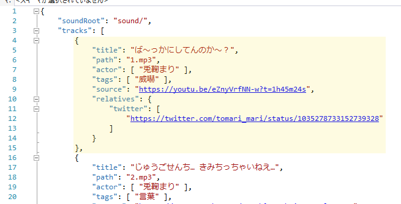

ボタンを作りたいという人に向けた文書です。 「ボタンの構成」で述べるファイルのうち、☆が付いているもの(自分が作ったもの)関してはNYSLを適用しますので、改造してボタンを作ってみてください。
兎鞠まりボタンは以下のファイルから構成されています。 音声ファイル以外はすべてテキストエディタで編集できます。
ページ本体です。ボタンやプレイヤーのテンプレートが入っています。
コンテンツを取得してページにボタンを配置するプログラムが入っています。
音声データのファイル名とボタン名を対応付けるデータが入っています。 contents.jsonはsoundRootとtracksから構成されています。 下図の薄く黄色にした部分がボタン一つ分に対応します。
音声ファイルのあるディレクトリの位置を指定します。 index.htmlのあるディレクトリからの相対パス、および、絶対パスを使用することができます。
ボタンごとの、タイトルと音声ファイルのパス、そして、メタデータが含まれています。 各項目とその説明を以下に示します。
| 項目名 | 説明 |
|---|---|
| title | タイトルです。ボタンに表示されます。 |
| path | 音声ファイルのパスです。soundRootからの相対パスを指定します。 |
| actor | 誰の声が入っているのかを記述します。現在は使用していません。 |
| tags | ボタンに付けられたタグです。 複数のタグを付けられますが、最初のタグはカテゴリになります。 現在はカテゴリの指定のためにのみ用いられています。 |
| source | 音声のソースです。 プレイヤーに表示されるタイトルの部分をクリックしたときにどこに飛ぶのかを指定できます。 |
| relatives | 関連項目です。現在は使用していません。 |
Webサイトのアイコンです。「いらすとや」さんの画像を使用しています。 なくてもいいです。
mp3です。/sound の下に入っています。
音声ファイル(とfavicon.png)を用意し、index.htmlとcontents.jsonを改造することで別のボタンを作ることができます。 あとは改造したindex.htmlとindex.jsとcontents.jsonと音声ファイルをどこかにアップロードすればOKです。
頑張って用意してください。
titleタグとh1タグとボタンの説明を行っているdivタグ(下部)の中身を書き換えてください。 twitterの埋め込みウィジェットのscreen_nameの書き換えも忘れずに。